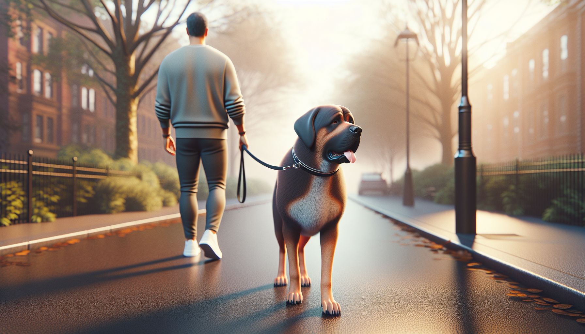

If walks feel more like a tug-of-war than quality time with your dog, you are not alone. Leash pulling is one of the most common struggles dog owners face, especially with energetic puppies, adolescent dogs, and newly adopted rescues. The good news is that pulling is a trainable behavior. With the right tools, a clear plan, and a little consistency, you can teach your dog to walk politely without yanking your arm out of its socket.
In this guide, you will learn why dogs pull, what equipment helps, and exactly how to train loose-leash walking using positive reinforcement. These methods are practical, humane, and backed by modern behavior science.
Dogs do not pull because they are stubborn, dominant, or trying to take control. Most pull for a much simpler reason: it works. When your dog leans forward and the leash tightens, they often still get to move toward the smell, person, dog, or exciting object they want. In other words, pulling is reinforced because it helps them reach the thing they value.
There are a few common reasons leash pulling becomes a habit:
Natural walking speed: Dogs often move faster than humans and want to explore efficiently.
Excitement and arousal: Walks are stimulating. New smells, sounds, and movement can push dogs into a highly excited state.
Lack of training: Many dogs are never clearly taught what to do instead of pulling.
Stress or fear: Rescue dogs or nervous dogs may pull to create distance from something scary or to get home quickly.
Breed tendencies: Some dogs are simply more driven to move, chase, sniff, or work.
Understanding the reason behind your dog’s pulling matters because it helps you train more effectively and compassionately.
Training matters most, but your gear can make the process safer and easier. The goal is management, not punishment. Avoid tools that rely on pain, fear, or discomfort, such as prong collars, choke chains, or shock collars. These may suppress behavior temporarily, but they do not teach your dog what you want and can increase stress or reactivity.
Instead, choose equipment that supports learning:
Front-clip harness: A well-fitted front-clip harness can reduce a dog’s ability to pull with full force and helps redirect forward momentum.
Standard leash: Use a 4- to 6-foot leash for training. This gives enough freedom without too much slack.
Treat pouch: Keep rewards easy to access so you can reinforce good choices quickly.
High-value treats: Soft, small treats work well, especially in distracting environments.
If your dog has a very strong pulling habit, management tools can help prevent rehearsal while you train. The less often your dog practices pulling, the faster you will see progress.
One of the biggest mistakes owners make is trying to train polite walking in the most distracting place possible. If your dog cannot focus in the driveway, they are unlikely to succeed on a busy sidewalk full of squirrels and other dogs. Start somewhere boring and easy, like your living room, backyard, or hallway.
Your first goal is simple: teach your dog that being near you and keeping the leash loose earns rewards.
Try this step-by-step approach:
Stand still with your dog on leash.
The moment your dog is beside you or turns toward you, mark the behavior with a cheerful “yes” or a clicker.
Give a treat near your leg where you want your dog to be.
Take one or two steps forward.
If the leash stays loose, mark and reward again.
If your dog surges ahead and tightens the leash, stop moving.
This last part is important. Forward motion is rewarding to dogs. When pulling makes the walk stop, and a loose leash makes the walk continue, your dog begins to learn which behavior pays off.
Keep sessions short and successful. A few minutes of focused practice is more effective than a long, frustrating walk.
The most reliable way to stop leash pulling is to remove the reward for pulling and heavily reward the behavior you want instead. This is the foundation of loose-leash walking.
Here is how the method works:
When the leash is loose, keep walking and reward your dog often.
When the leash becomes tight, stop immediately.
Wait calmly. Do not jerk the leash or scold.
The moment your dog turns back, steps toward you, or creates slack in the leash, mark and reward.
Then continue walking.
Some owners prefer to add a direction change. If the dog pulls ahead, turn and walk the other way for a few steps, then reward when the dog catches up on a loose leash. This can work well for dogs that are highly motivated by movement.
Consistency is everything. If pulling sometimes gets your dog to the park, the mailbox, or the interesting smell, the behavior stays strong. Everyone who walks the dog should follow the same rules.
Many people only notice their dog when something goes wrong. But dogs learn faster when we actively reinforce the behavior we want. If your dog is walking nicely for even three steps, that is worth rewarding early in training.
Useful things to reward include:
Walking beside you with a loose leash
Checking in by looking at you
Choosing to slow down near distractions
Turning back when they reach the end of the leash
Following you through a change of direction
You can also use real-life rewards. If your dog wants to sniff a bush, greet a friendly person, or move toward a tree, ask for a moment of leash slack first. Then say something like “go sniff” and let them have the reward. This teaches your dog that polite leash behavior makes good things happen.
Sniffing is especially powerful. Walks are not just exercise for dogs; they are also mental enrichment. Giving your dog structured opportunities to sniff can reduce frustration and make polite walking easier.
Different dogs need slightly different training plans. The principles stay the same, but your expectations should match the dog in front of you.
Puppies: Keep sessions very short and upbeat. Puppies have limited attention spans and get overstimulated quickly. Focus on introducing the leash positively, rewarding proximity, and practicing in quiet spaces before expecting neighborhood walks.
Rescue dogs: New adopters often discover pulling right away, but remember that rescue dogs may still be decompressing. Stress, uncertainty, and sensory overload can make leash manners worse. Give your dog time, use predictable routines, and start in calm environments. If your rescue dog seems fearful, prioritize confidence and safety over perfect heelwork.
Adolescent or high-energy dogs: These dogs may need a chance to burn off energy before formal leash training. A few minutes of play, enrichment, or sniffing can lower arousal and improve focus. Expect setbacks during adolescence; this is normal, not failure.
If your dog is still pulling despite practice, one of these common issues may be getting in the way:
Moving too fast: Training in highly distracting places before your dog is ready can cause repeated failure.
Rewarding too little: Early training should include frequent reinforcement.
Inconsistency: If one walk allows pulling, your dog gets mixed messages.
Expecting a perfect heel: Most pet dogs do not need competition-style precision. Aim for a loose leash, not robotic position.
Using aversive tools: Punishment may suppress pulling temporarily but can increase stress and damage trust.
If your dog pulls mainly when they see other dogs, people, bikes, or cars, there may be an underlying reactivity or fear issue. In that case, leash training alone may not solve the problem. A certified positive reinforcement trainer or veterinary behavior professional can help you create a safer plan.
Loose-leash walking is a skill, not a one-time lesson. Progress often comes in stages. First, your dog may walk nicely in the house. Then in the yard. Then on a quiet street. Eventually, they can handle more distracting environments. Improvement is rarely perfectly linear, especially for puppies and rescue dogs adjusting to the world.
Success does not mean your dog never reaches the end of the leash again. It means they recover faster, check in more often, and understand that staying connected to you is rewarding. That is real training progress.
Be patient with yourself too. Teaching leash manners takes timing, repetition, and realistic expectations. Every calm step on a loose leash is worth celebrating.
If you want to stop your dog from pulling on the leash, focus on teaching rather than correcting. Use humane equipment, start in low-distraction places, reward generously, and make sure pulling never gets your dog where they want to go. Whether you are raising a puppy, helping a rescue settle in, or retraining an adult dog, positive reinforcement can transform your walks into something both of you enjoy.
With consistency and kindness, your dog can learn that a loose leash is the fastest path to fun, freedom, and adventure.
CTA: Get our full Dog Training eBook series — new titles added weekly.